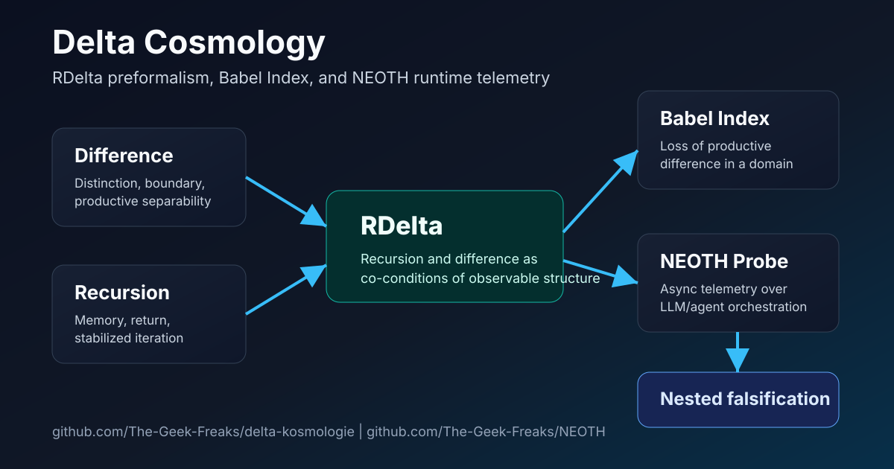
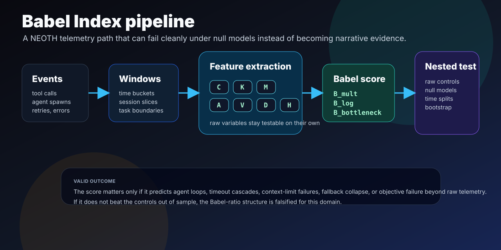
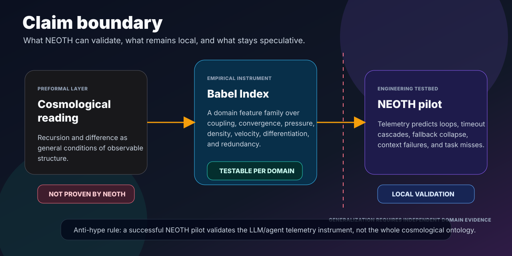

Delta Cosmology
A falsifiable framework for measuring loss of productive difference in complex systems, starting with agentic LLM runtimes.

The Babel Index
The Babel Index is a domain-specific engineered feature for testing whether coupling, convergence pressure, resource pressure, agent density, and information velocity outrun differentiation and redundancy.
B_d(t) = norm_d((C_d * K_d * M_d * A_d * V_d) / (D_d * H_d + epsilon))
Why NEOTH?
Observable tool chains
Tool calls, retries, fallback routes, and failures can be measured directly.
Agent density
Subagents and active sessions expose the actor-density side of the framework.
Context pressure
Context-window limits, queue load, and timeouts make resource stress visible.
Falsifiable outcomes
Loops, timeout cascades, context failures, and task misses can become labels.
Scientific boundary
A NEOTH result can validate the local telemetry instrument. It does not prove the cosmological interpretation. If the Babel feature adds no out-of-sample signal after controlling for raw variables, it is falsified for that domain.
